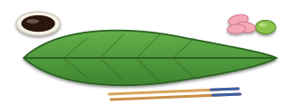
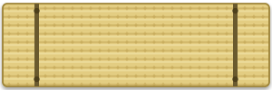
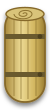
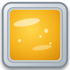
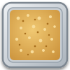

Ramen Mania está diseñado para jugarse en formato horizontal (Landscape) como una máquina arcade.




Huevo
PankoEscribe la clave única de otra cuenta. Primero se valida este dispositivo.
Las mejoras ayudan, no juegan por ti. No cuentan en partidas multijugador.
Platos disponibles para servir en tu nivel actual.
🍜 Orden del ramen: fideo → caldo (Shio / Tonkotsu) → salsa → proteína → complementos.
| Ramen | Ingredientes Exactos | Precio |
|---|
Balance de la jornada
| # | Jugador | Recaudado | Atendidos | Nivel | Fecha |
|---|
Campaña culinaria de 5 Niveles. Cumple la meta de ventas en Soles antes de que termine el tiempo.
Supervivencia acelerada: inicia con 8 clientes y 5 vidas. Paciencia decreciente.
| # | Chef / Usuario Registrado | 📞 Contacto / WhatsApp | 📱 Dispositivo Vinculado | 🏆 Récord Max | ⭐ Nivel Alcanzado | 🎮 Partidas | 📅 Fecha Registro | ⏰ Última Actividad | Estado |
|---|
Ranking de los ramen con mayor cantidad de clientes perdidos y órdenes abandonadas por los comensales.
| # | Ramen | Precio | Ingredientes | Clientes Perdidos | Frecuencia Relativa | Diagnóstico |
|---|
| Fecha/Hora | Jugador | Modo | Nivel | Duración | Atendidos / Perdidos | Ramen No Entregados | Resultado |
|---|
El Ajitsuke Tamago es el alma y la prueba de fuego de todo maestro ramen. El secreto artesanal comienza con una rigurosa selección de huevos frescos a temperatura ambiente para evitar microfisuras al contacto con el agua en ebullición.
La cocción se cronometra con precisión absoluta a 6 minutos y 15 segundos, logrando el estado sagrado 'Hanjuku': clara firme pero tierna y sedosa, y una yema cremosa, dorada y de consistencia casi gelatinosa que se funde delicadamente al tocar el caldo hirviendo.
¡Felicidades, Chef! Ya dominas la cocina de Ramen Mania, las 4 estaciones de preparación y el orden sagrado de armado Donburi.
Busca automáticamente a los primeros 4 chefs conectados en línea.
Crea una sala con código para invitar de 2 a 4 amigos (VS o Cooperativo).
Buscando rivales de tu misma categoría competitiva.